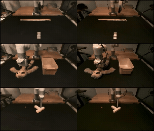
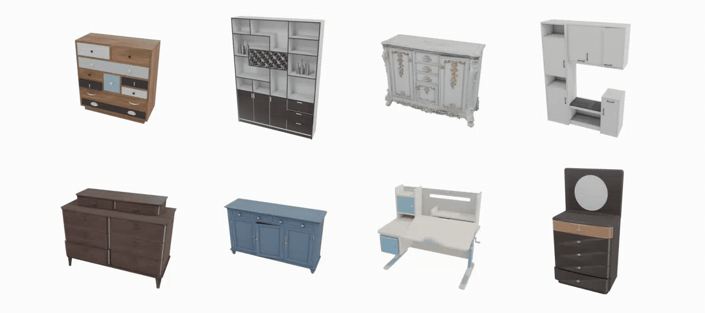
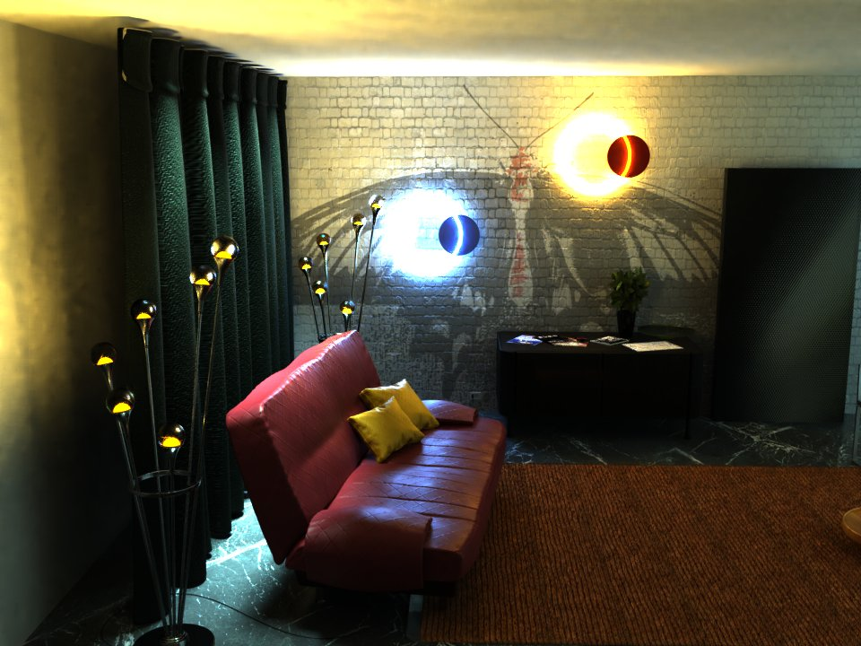

Hanxiao Jiang (Shawn) | 蒋含啸
Site soundtrack

为天地立心，为生民立命。 为往圣继绝学，为万世开太平。 --- 《横渠语录》
To ordain conscience for Heaven and Earth. To secure life and fortune for the people. To continue lost teachings for past sages. To establish peace for all future generations.
I'm a Ph.D. student in Computer Science at Columbia University,
co-advised by Prof. Yunzhu Li (Columbia) and Prof. Shenlong Wang (UIUC).
My research interests lie in the intersection of Robot learning, Robot Vision and 3D Vision.
I received my master degree in Computer Science at Simon Fraser University, fortunately advised by Prof.
Angel Xuan Chang and Prof. Manolis Savva.
Prior to this, I received my Bachelor of Engineer & Bachelor of Science from the dual degree program between Zhejiang University and Simon
Fraser University.
News
-
Boba and Deform360 got accepted to ECCV 2026.
-
Real2Sim-Eval got accepted to ICRA 2026.
-
I will join Nvidia Research in Redmond as a Research Intern in Robotic Perception for 2026 summer.
Preprints & Publications





